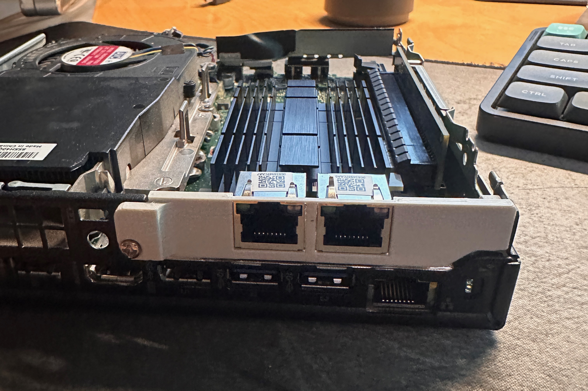

For this project, I set up a homelab environment using Proxmox VE type 1 hypervisor that allows me to run multiple virtual machines on a single physical server. I installed Proxmox on a Thinkpad laptop and configured it to run virtual machines for sandboxing, local media server, and DNS server. I also set up a pfSense firewall on a Lenovo m920q to manage the network traffic between the virtual machines and the internet. Utilizing a 3D printed bracket I installed a 2.5gb NIC in the Lenovo m920q to allow for faster network speeds between the virtual machines and the internet.
This homelab environment has allowed me to experiment with different operating systems, software configurations, and network setups in a controlled environment. It has also provided me with a platform to learn about virtualization, containerization, networking, and system administration while also serving as a testing ground for various projects and ideas.
I plan on expanding the homelab environment to include more virtual machines and additional networking equipment
Resources: Proxmox, pfSense, various Linux distributions, piHole, physical hardware, docker
